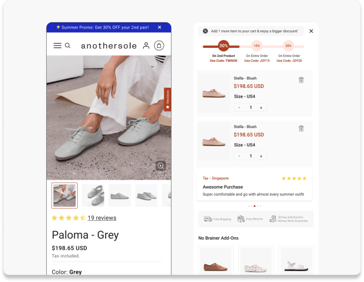
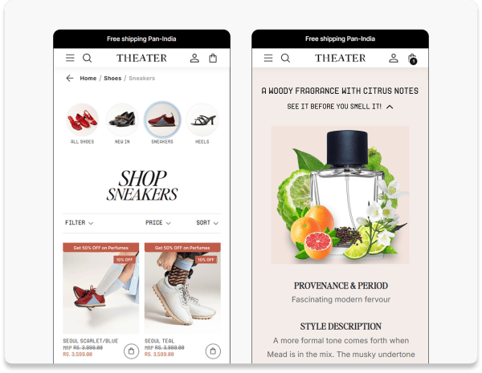
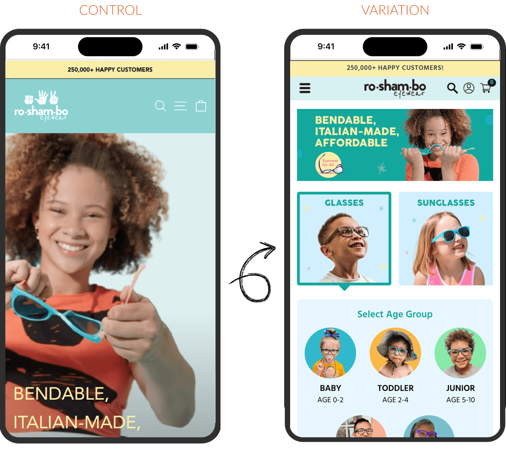
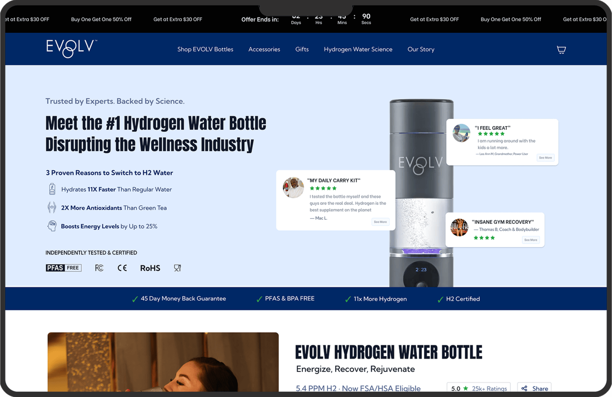
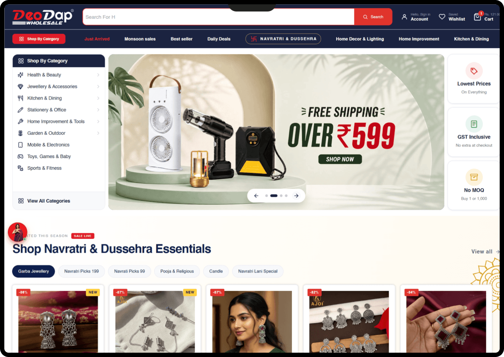
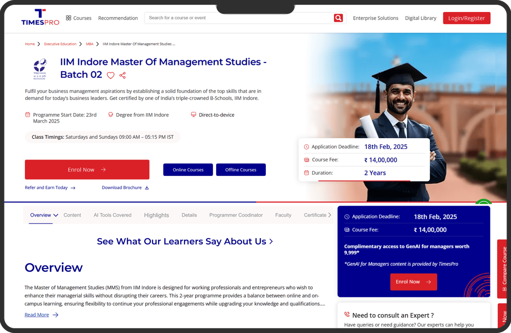
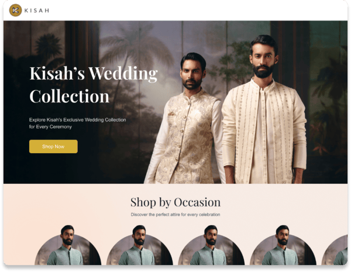
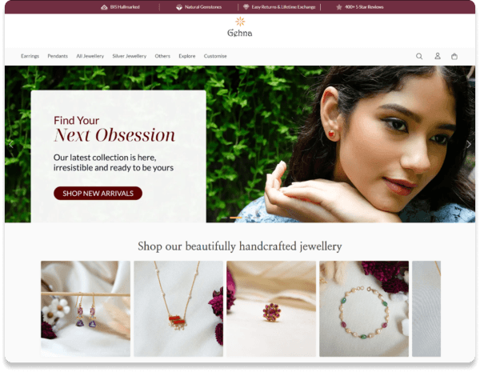
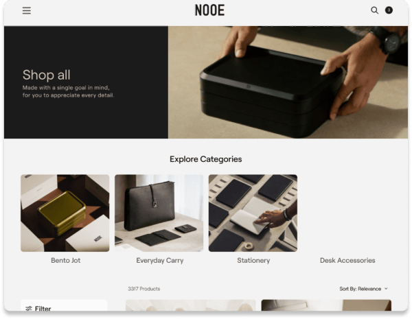
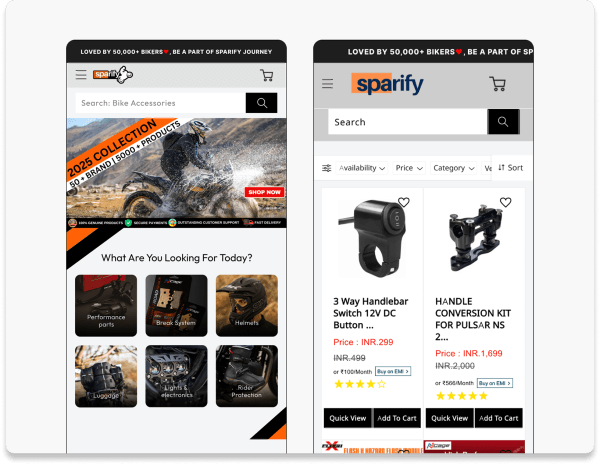

Prepared for Johan Lingvall
Partyking
A short look at partykungen.se and where we would start.

What we saw on partykungen.se
Around 580,000 visits a month, about a third of them paid.
People spend two minutes and look at three pages per visit, which means most of them arrive knowing what they want and go looking for it. What happens after that, we can only see from the inside.
Where we would start
Shop by theme
Most visitors come for an occasion, not a product. Right now they have to find the costume, the decoration and the tableware separately.
We would test theme pages that put everything for one occasion on one page and measure revenue per visitor.
Landing pages for paid traffic
A third of the traffic is paid and most of it lands on generic category pages.
We would test landing pages that match the search people came from and measure the conversion rate of paid sessions.
Who we are
ConvertPolo is a conversion rate optimization agency for ecommerce and D2C brands, and a strategic partner of VWO.
Research, design, development, QA and analysis sit in one team. We work as an extension of yours and run every change as an A/B test against a control.

 Anirban ChakrabortyFounder & CEO
Anirban ChakrabortyFounder & CEO Saurabh PatwaCo-Founder
Saurabh PatwaCo-Founder Ansuya PoudelBrand & Growth Content Lead
Ansuya PoudelBrand & Growth Content Lead Jatin Kumar SinghCRO Analyst
Jatin Kumar SinghCRO Analyst Ankita DagaUX UI Design Lead
Ankita DagaUX UI Design Lead Mahendra KanojiyaTeam Lead
Mahendra KanojiyaTeam Lead Kishan RaiFrontend Developer
Kishan RaiFrontend Developer Vishwajay SharmaQA Engineer
Vishwajay SharmaQA EngineerOur work








Let's talk
Thirty minutes with Anirban Chakraborty, our founder, on what this would look like on partykungen.se.
Book a callconvertpolo.com · info@convertpolo.com



